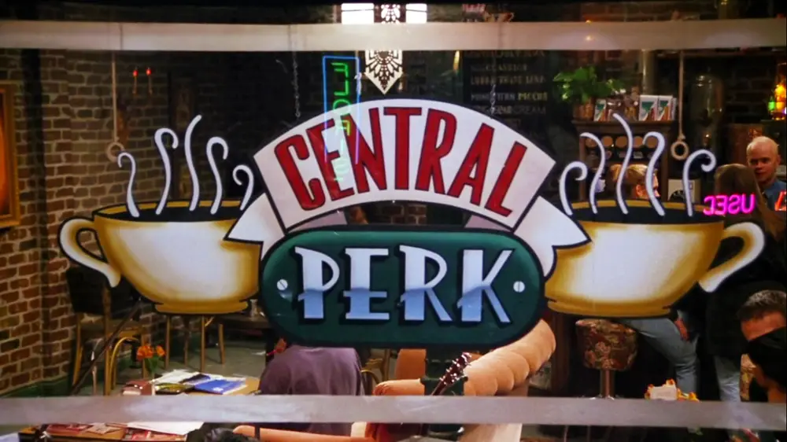
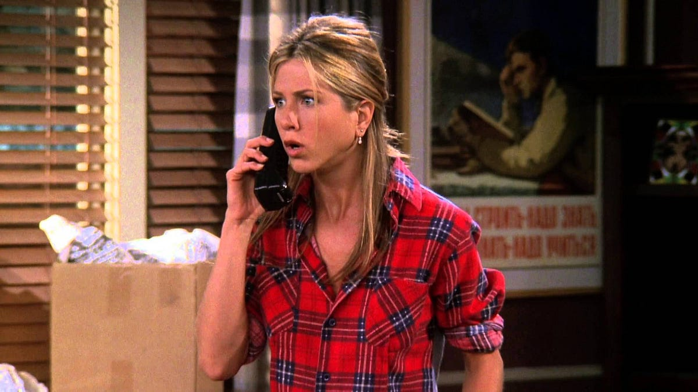
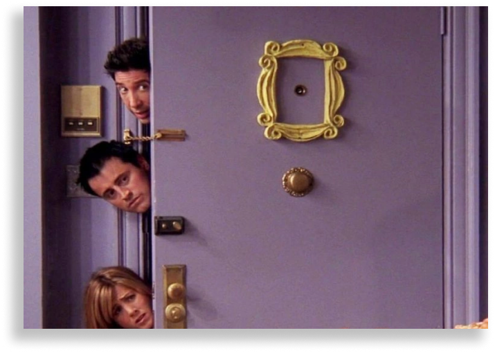
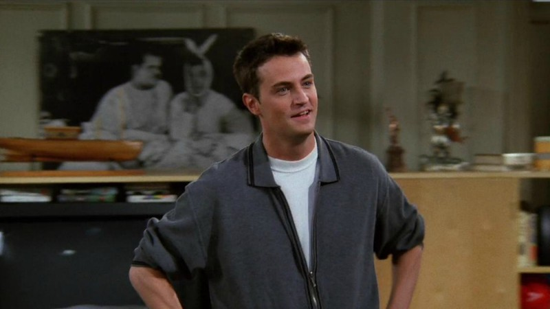

Friends é um dos seriados de maior sucesso da televisão americana e também recordista de audiência no streaming. Existem algumas curiosidades como:
Assim como a maior parte de todos os episódios. Na verdade, os seis amigos protagonizaram a série em um estúdio em Burbank, na Califórnia, sede dos estúdios da Warner nos Estados Unidos.

À Entertainment Weekly, um dos cenógrafos da série disse que eles tiveram um dia longo de gravações e que eles beberam um ou outro drinque antes de entrarem na fonte e se molharem de maneira divertida.

Antes do piloto ser comprado pela NBC, os criadores Marta Kauffman e David Crane tinham o nome Insomnia Cafe em mente para batizar o famoso seriado. Após a compra pela NBC, o nome mudou para Friends Like Us, mas antes de ir ao ar, a série foi nomeada apenas como Friends.
De acordo com o livro Generation Friends, que revela alguns detalhes dos bastidores da série em comemoração aos seus 25 anos, Jennifer Aniston quase não entrou em Friends pois estava cotada para outra série do canal CBS. Aniston era a favorita a interpretar Rachel Green na série mas já havia feito alguns episódios da produção concorrente, que acabou não indo ao ar. Já pensou Friends sem Jennifer Aniston como Rachel Green?
A moldura que envolve o olho mágico da porta da casa de Monica virou uma sensação cultural e uma decoração que se tornou símbolo de Friends. Mas, de acordo com o Popsugar, a moldura era de um espelho que fazia também parte do cenário, mas que quebrou. Na ocasião, o cenógrafo prendeu a moldura na porta e o objeto acabou se tornando um fenômeno.
Em 1997, Matthew Perry foi pela primeira vez para a reabilitação por conta de seu vício em remédios e álcool. Já em 2001, o ator foi novamente para numa clínica para tentar lidar com seus problemas com as drogas. Tempos depois, em 2013, ele revelou à revista People que nunca estava embriagado ou drogado no trabalho e que isso já vinha de um tempo anterior à série. ‘’As coisas foram ficando feias e já nao podia esconder mais das pessoas’’, disse o ator.
Um dos momentos mais lembrados da série é seu casamento do personagem com Emily . Ross erra o nome da própria noiva no altar e a chama de Rachel, pois ele ainda tinha sentimentos por ela. O que o público não sabe, na verdade, é que isso não estava no roteiro original e que foi um erro de gravação. Segundo o roteirista Greg Malins ao programa The Story Behind, Ross deveria falar ''Emily, o táxi está esperando'', mas na verdade disse ''Rachel, o táxi está esperando'', e a partir disso, os diretores pegaram a deixa e fizeram as mudanças no texto.

Na sexta temporada, Courteney Cox (Mônica) recebeu uma homenagem nos créditos do programa. Após ter casado com o ator e produtor David Arquette o episódio foi dedicado ao casal: ''Para Courteney e David, que se casaram''. (O casal se divorciou em 2013).